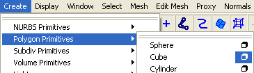
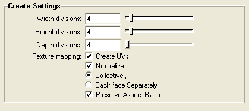
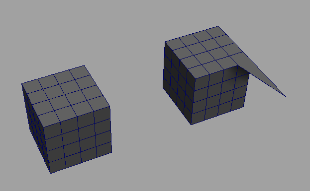
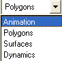
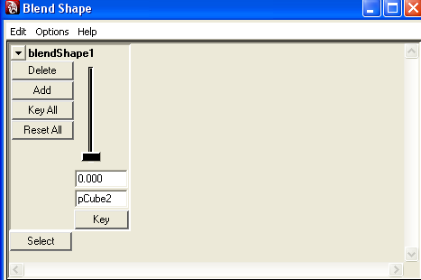
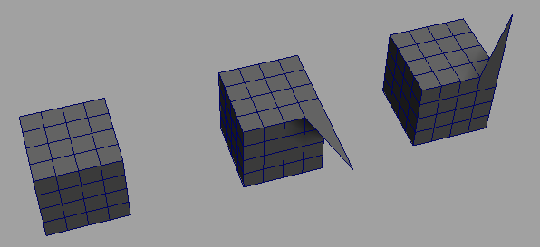
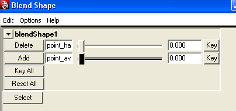
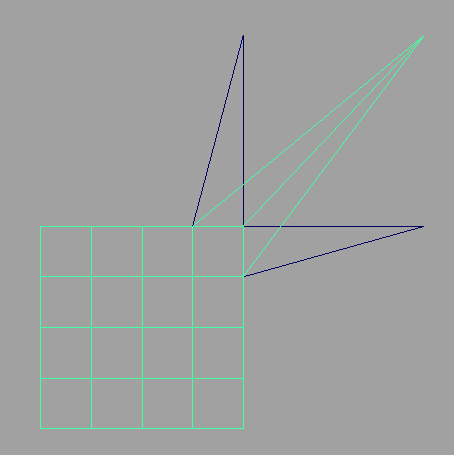

Bonjour et bienvenue à tous sur ce tutoriel consacré aux Blend Shapes sous Maya.
Les Blend Shapes sont un moyen de faciliter énormément l'animation, et permettent de créer des expressions de visage.
Evidemment c'est flou pour vous, mais bientôt vous saurez animer les visages de vos personnages les yeux fermés. Et croyez-moi, ça c'est la classe ^^ .
La difficulté de ce tuto est minime. Les bases de Maya sont quand même préférables. Je vous conseille donc ce tuto ;)
Avant de se lancer dans le tutoriel en lui même, vous devez savoir ce qu'est en réalité un Blend Shape. C'est un outil qui permet d'appliquer une transformation à un objet à une certaine intensité.
Cette intensité est réglée grâce à un simple curseur.
Imaginons que vous ayez modélisé un personnage, et vous voulez lui faire gonfler les joues au maximum. Vous allez déplacer vos points. Puis lorsque le personnage devra dégonfler les joues, vous devrez à nouveau déplacer les points.
Personnellement je trouve ça long et rébarbatif (je suis certainement pas le seul :p ).
Un Blend Shape va en fait permettre de faire varier la position des points voulus entre 2 bornes extrêmes (ici, ce sera les joues rentrées et les joues gonflées).
La scène
Bon attaquons le tutoriel plus sérieusement.
Lancez Maya si ce n'est pas déjà fait. Nous allons créer un cube (polygon), dont les côtés seront divisés en 4 chacun. Pour cela faites "Create -> Polygon Primitives -> Cube" et cliquez sur le petit carré à côté de "Cube" dans le menu déroulant :

Une fenêtre va apparaître, vous permettant de régler les options de votre cube (vous devez déjà certainement connaître tout ça, mais dans le doute... Et puis ça ne fait pas de mal de répéter). Mettez les options comme sur cette capture et dessinez votre cube :

Appuyez alors sur la touche 5 de votre pavé numérique pour voir le cube en mode plein. Vous pouvez enlever la grille qui ici ne nous sert à rien. Pour cela faites "Show -> Grid" dans la barre d'outils de la scène.
Voilà nous sommes prêts pour passer aux choses sérieuses !
Pour mieux comprendre l'utilisation d'un Blend Shape, il va falloir dupliquer notre cube. Pour cela j'utilise le raccourci clavier "Ctrl + D". Je déplace ensuite mon cube.
Je passe le cube dupliqué en mode "Vertex" et je déplace un vertex (si vous ne savez pas faire tout ça, c'est qu'il est vraiment trop tôt pour voir les Blend Shapes).
Voici ce que j'obtiens :

Une fois ce point déplacé, vous devez sélectionner les 2 cubes.
Passez en mode "Animation" dans la liste déroulante en haut à gauche :

Allez dans le menu "Deform -> Create Blend Shape", et cliquez dessus.
Et voilà votre Blend Shape est créé ! Champagne pour tout le monde ! (Ah non c'est Coca sur le SdZ ^^ ).
Heuuu :euh: je vois rien du tout moi. Ça n'a pas marché ?!
Si, tout a bien fonctionné, seulement il reste une manipulation à faire pour pouvoir utiliser votre Blend Shape.
Utiliser le Blend Shape
Maintenant, on va pouvoir voir le résultat de notre travail. Pour cela rendez-vous dans "Window -> Animation Editor -> Blend Shape".
Une fenêtre s'ouvre devant vous :

Pour bien comprendre ce qui se passe, essayez de déplacer le curseur. Et là magie :magicien: , votre cube de départ bouge. Le même point que celui de la copie se déplace. Et il ne se déplace pas n'importe comment, mais entre la position de départ, et la position de ce même point sur la copie du cube.
Pour rappel :
Citation : Moi
Un Blend Shape va en fait permettre de faire varier la position des points voulus entre 2 bornes extrêmes.
Vous comprenez donc le fonctionnement. Le curseur permet de faire varier l'intensité de votre déformation entre 0 et 1 (les valeurs extrêmes). 0 correspond à la position initiale de l'objet, et 1 à la position totalement déformée.
Je vous laisse donc imaginer ce que tout cela apporte. Une copie pour les mouvements des yeux. Une copie pour les mouvements des lèvres. ...
Et après, quelques curseurs à déplacer pour obtenir la position escomptée.
Combiner les Blend Shapes
Imaginez que l'on veuille pouvoir déplacer notre point vers le haut, et aussi vers l'avant. Il va falloir créer 2 Blend Shapes, mais qui s'appliquent au même point.
Rien de plus simple. On duplique 2 fois le cube, et on applique une transformation à chaque cube comme ceci :

Vous pouvez renommer vos cubes dupliqués, ce qui vous permettra de mieux vous retrouver dans vos Blend Shapes. ;)
Pour la suite, c'est la même démarche.
On sélectionne les cubes un à un en commençant par les cubes dupliqués.
On passe en mode Animation.
On créé le Blend Shape.
On affiche le Blend Shape avec l'animation editor.
Et on obtient quelque chose comme ceci :

Vous pouvez faire bouger les 2 barres, et vous voyez votre point qui se déplace dans les 2 dimensions. Vous notez aussi que l'on voit le nom des cubes dupliqués à côté des barres correspondantes (d'où l'utilité de renommer les cubes).
Voilà ce que l'on voit de profil quand on pousse les 2 curseurs au maximum (valeur 1 ;) ) :

Vous l'aurez compris, le Blend Shape est un outil très puissant, très pratique surtout, qui vous apportera une aide considérable dans l'animation de vos modèles 3D. Il existe des techniques plus complexes pour lier les Blend Shapes entre eux, mais c'est d'un niveau plus difficile, et je ne les aborde donc pas ici.
Cependant je pense que vous avez déjà pas mal de choses à faire avec ce tuto. ;)
Ceci n'est qu'une initiation aux Blend Shapes, ce qui explique qu'il n'est pas très long. Cependant cela doit déjà bien vous aider à animer vos objets 3D.
En tout cas, j'espère que j'aurai pu aider quelqu'un. ;)